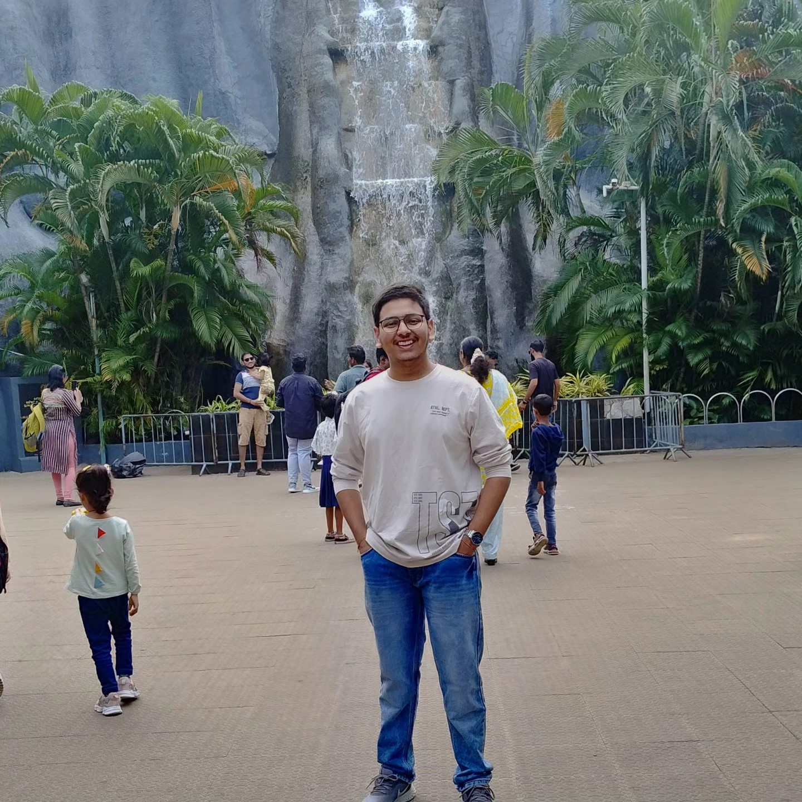

Aditya Thakur
CGPA: 9.13
Passion and determination fuel continuous growth and excellence
Education
VIT Chennai
B.Tech Civil Engineering with Minors in AI and ML
CGPA: 9.13
2023 - 2027
PM Shree Kendriya Vidyalaya IMA, Dehradun
Intermediate
Percentage: 90.00
2020 - 2022
St. Mary's Sec. School, Clement Town, Dehradun
Matriculation
Percentage: 95.00
2017 - 2020
Technical Skills
- Java Core
- Object Oriented Programming
- Python
- RDBMS and SQL
- AutoCad
- Matlab
Projects
-
Namo Nirvana
Project Type : Group project (Group of 11)
Role : Creation and stimulation of CAD model
Description :This project was developed in the 1st year of our undergraduate in response to the problem statement provided for the ISRO Robotics Challenge (IRoC-U) 2024, which required the creation of a space robot prototype aided by computer vision.
Verification
-
SuperMarket Management System
Project Type : Individual
Description :This was a project created in Java with connectivity to MySQL, consisting of two interfaces one for the customer and one for the store management. This could be used by small and medium-size enterprises to bring business online and have a smooth track of inventory.
Project Link
Co-Curriculars
-
Magadh-Mithila Club, VIT Chennai
Cultural Club
Member of the cultural department
Learned: teamwork and public speaking
-
Namo Nirvana, VIT Chennai
Special Team
Member of the CAD and Simulations Department
Learned: real-world problem-solving and developed new approaches towards challenges